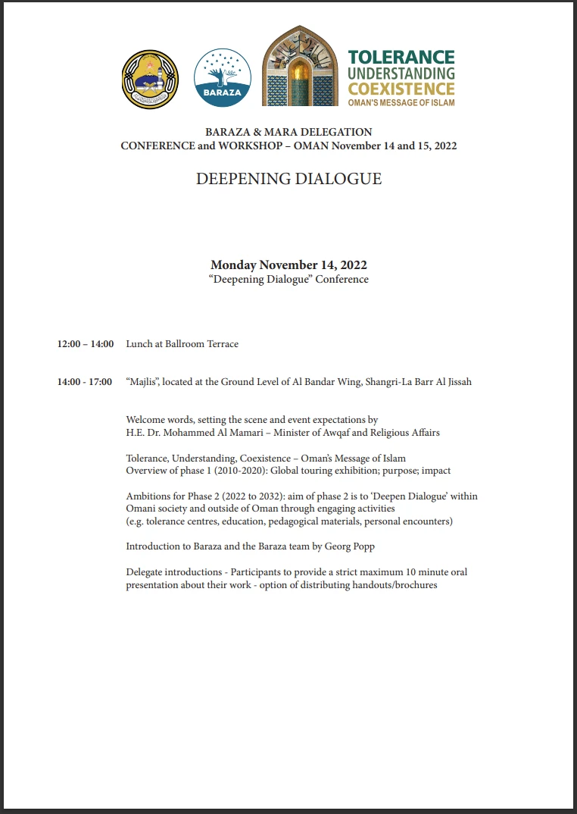
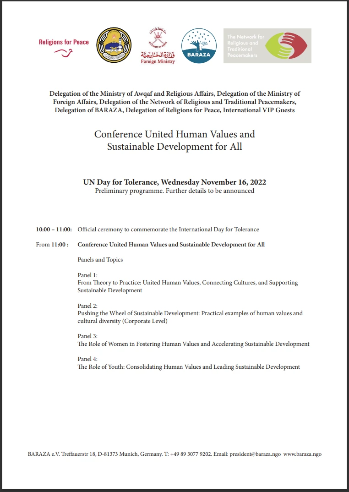

لقد عدنا...
للأسف، تباطأ نجاحنا العالمي الكبير لمبادرة "التسامح والتفاهم والتعايش - رسالة السلام من عمان" بسبب جائحة كوفيد -19.
لكننا نعيد بفضل الله إطلاق جميع أنشطتنا، معارضنا، مؤتمراتنا، ورش عملنا، ندواتنا مرة أخرى.
يرجى التواصل ومتابعتنا، لمعرفة مواعيد وأماكن فعاليتنا القادمة.
يسعدنا الإعلان عن مؤتمرنا وورشة العمل: حوار عميق. من 14 نوفمبر إلى 15 نوفمبر 2022، في منتجع شانغريلا بر الجصة، البندر، مسقط، عمان. يرجى تصفح تفاصيل البرنامج (باللغة الإنجليزية) من هنا »

تنزيل برنامج ورشة العمل: حوار عميق - 14-15 نوفمبر 2022 - مسقط، عمان (باللغة الإنجليزية) من هنا»
تتشرف وزارة الأوقاف في سلطنة عمان، ومؤسسة بارزا، بالإعلان عن مؤتمرنا القادم: القيم الإنسانية المشتركة والتنمية المستدامة للجميع. بمناسبة اليوم العالمي للتسامح للأمم المتحدة، الأربعاء 16 نوفمبر 2022 - مسقط ، عمان. اكتشفوا تفاصيل البرنامج (باللغة الإنجليزية) من هنا »

تنزيل برنامج مؤتمر: القيم الإنسانية المشتركة والتنمية المستدامة للجميع - 16 نوفمبر 2022 - مسقط، عمان (باللغة الإنجليزية) من هنا»
لاستكشاف فعالياتنا السابقة، تفضلوا بزيارة هذا العرض المرتب زمنيًا، لبعض المختارات من معارض التسامح العالمية »
كما ندعوكم أيضًا لزيارة معرضنا الافتراضي. راجين الله أن تستمتعوا بهذه الجولة الافتراضية وبلغتكم المفضلة. مع أجمل الصور، وأوثق المعلومات عن الإسلام والحياة والفنون والتسامح في سلطنة عمان، من خلال هذه الرحلة الرائعة »
تفضلوا بزيارة معرض التسامح العالمي الافتراضي بلغتكم المفضلة


المكتبة المرئية:


مختارات من معارض التسامح العالمية السابقة:
مدينة أوجسبورج، ألمانيا 2011
مدينة ليستر، المملكة المتحدة 2012
مدينة ليوبليانا، سلوفينيا 2014
مدينة ميشيغان، الولايات المتحدة الأمريكية 2014
جمعية كوريا، كوريا الجنوبية 2014
مدينة ميلانو، إيطاليا 2015
مدينة سكوبيه، مقدونيا 2015
مدينة تورنتو، كندا 2016
مدينة قرطبة، إسبانيا 2016
جامعة توكاي، اليابان 2017
مقر منظمة اليونسكو، فرنسا 2018 مقر الأمم المتحدة، الولايات المتحدة الأمريكية 2019